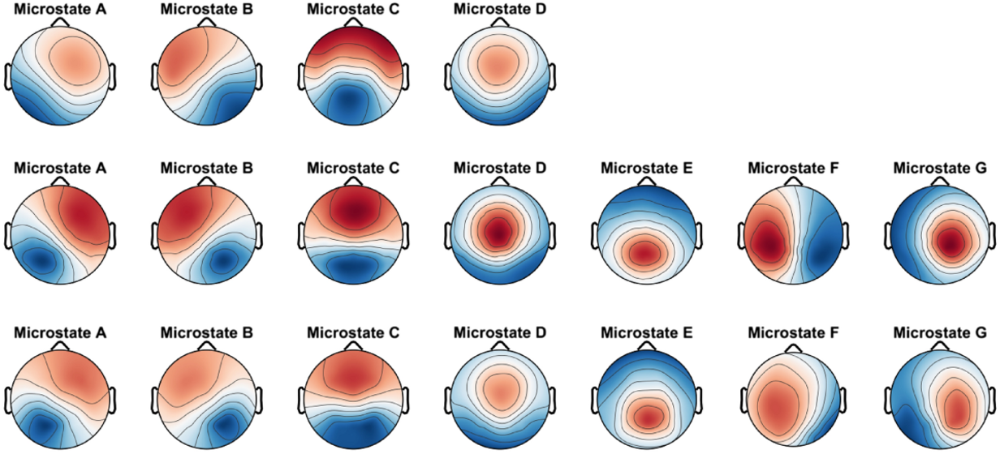
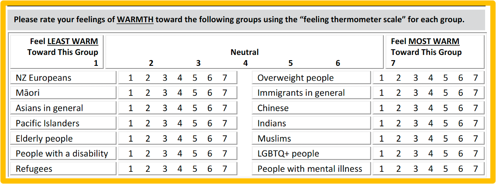

Research Summary
![]()
February 7, 2025
PhD Research (2019-2022)
Supervisors
- Assoc Prof Ewald Neumann
- Prof Richard Jones
Memory Suppression
- The Think/No-Think paradigm
- Prof Michael Anderson (University of Cambridge)
- Replication
- As a memory suppression mechanism for OCD and PTSD
Forensic Neuroscience
- Brain Fingerprinting (Dr Larry Farwell)
- Detection of conceaeled criminal knowledge
- Replication with parolees
Final Study
- Using Think/No-Think against Brain Fingerprinting
Publications
- Detection of concealed knowledge via the ERP-based technique Brain Fingerprinting: Real-life and real-crime incidents. Afzali et al. (2022). Psychophysiology.
- Classification accuracy of the event-related potentials-based Brain Fingerprinting and its robustness to direct-suppression and thought-substitution countermeasures. Afzali et al. (2023). Applied Cognitive Psychology.
- Suppression-induced forgetting in people with obsessive-compulsive and post-traumatic stress traits. Afzali et al. (under review). Psychology & Neuroscience.
Postdoc 1 (2022)
Contemplative Neuroscience
- Prof Peyman Zawar-Reza
- EEG Microstates
- What are the brainwave patterns of mindfulness meditation?
- Implications for overall wellbeing
- Computational Contemplative Neuroscience (PSYC480) at University of Canterbury
Microstates
Extra-curricular Research (2019-2022)
NZAVS
- The New Zealand Attitudes and Values Study (NZAVS)
- A planned 20-year quantitative longitudinal panel study of New Zealanders’ values and attitudes, currently in year 16
- Use postal/online questionnaires
- Large multi-disciplinary research team
- Samples 72,000+ unique people (1.5% of the adult NZ population in 2018)
Warmth Thermometer
Publications
- Exploring New Zealand National Identity and Its Importance for Attitudes toward Muslims and Support for Diversity. Yogeeswaran et al. (2019). NZJP.
- Prejudice toward Muslims in New Zealand: Insights from the New Zealand Attitudes and Values Study. Sibley et al. (2020). NZJP.
- Hate begets warmth? The impact of an anti-Muslim terrorist attack on public attitudes toward Muslims. Shanaah et al. (2021). Terrorism and Political Violence.
- Psychological impact of far-right terrorism against Muslim minorities on national distress, community, and wellbeing. Byrne et al. (2022). Nature Scientific Reports.
- Long-term causal effects of far-right terrorism in New Zealand. Bulbulia et al. (2023). PNAS Nexus.
Postdoc 2 (2023-2025)
Muslim Diversity Study (MDS)
- Booster for NZAVS to address under-representation
- Recruit 650 Muslims across six New Zealand cities
- Knowledge mobilization
- Sharing with diff stakeholders e.g., the government, community orgs, rights advocates
- Wave 1 ended
- 30 staff (part-time fixed-term)
MDS Scope
Do individuals with the strongest ties to their religious communities (e.g., through service attendance and prayer) experience less prejudice compared to others?
Do followers of certain religions face more significant challenges in employment and health compared to members of other religious groups?
Are wellbeing, sense of meaning in life, and psychological distress similar across religious groups due to the buffering effects of religious community-making?
Provides understanding of psychology of religion, human flourishing, and wellbeing across different religious denominations
Publications
- Muslim Diversity Study: Quantitative protocol and practical insights on engaging New Zealand’s Muslim communities. Afzali et al. (submitted).
- Enablers and barriers to data collection in Muslim community of New Zealand: A qualitative assessment of research assistant experiences. Afzali et al. (in preparation).
- The New Zealand Muslim Diversity Study: Baseline Sample Information 2023-2024. Afzali et al. (in prepration).
- Demographic and personality factors associated with Islamophobia in New Zealand. Badis et al. (under review).
Areas of Research
- Human flourishing
- Psychology of religion
- Islamophobia
- Rituals and contemplation
- Cognitive psychology
- Forensic psychology
Research Projects
As PI in the Muslim Diversity Study.
As PI in Controlling unwanted memories: A multisite registered replication of the Think/No-Think effect
As PI in Resting EEG microstates during contemplative practices
Current Research Supervision
- L. Greig. MSc Psychology. [Co-supervisor].
- I. Findley. MSc Psychology. [Co-supervisor].
- A. Bello. PhD Data Science. Effects of interaction with a dog on the brain and non-brain activity using mobile brain/body imaging (MoBI). [Associate supervisor].
- K. Johnson. PhD Psychology. Biomarkers for Early Dementia: Memory suppression, language comprehension and EEG. [Co-supervisor].
Teaching
- Research Methods/Statistics (UC)
- Neuroscience (UC)
- Psychology of Religion (Otago)
- Religion and Human Behaviour (Otago)
- Introduction to the Scientific Study of Religion (Otago)
Thank You!

www.usmanafzali.com
Social and Socio-political Psychology